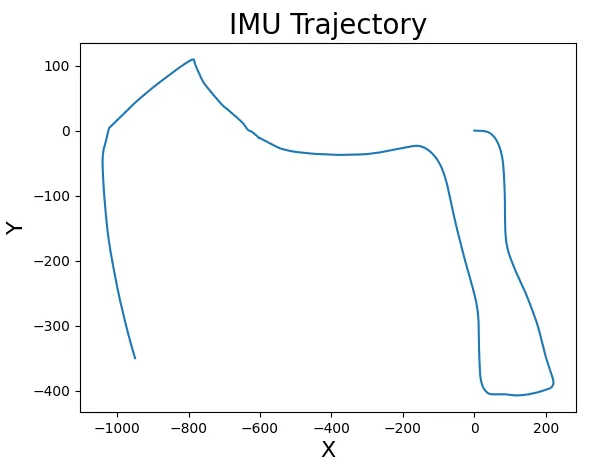

01 / Data
An IMU that drifts, a camera that remembers.
A car drove with an IMU, reporting linear and angular velocity, and a stereo camera whose features were tracked from frame to frame, along with the camera intrinsics, the stereo baseline and the camera-to-IMU transform. Integrating the IMU alone gives a trajectory that is right over seconds and wrong over minutes; landmarks seen again and again by the camera are what can hold it in place.
02 / Filter
Predict on SE(3), update with what the cameras see.
Prediction
The IMU’s linear and angular velocity form a twist. The pose, a 4 × 4 transform in SE(3), moves by the exponential map of that twist over each time step, and the pose covariance moves with the corresponding adjoint, so orientation is never forced through Euler angles.
Landmarks
The first time a feature is seen in both cameras, its depth comes from the disparity between them, and it is placed in the world from the current pose and the camera-to-IMU transform.
Update
For every visible landmark, the filter predicts where it should appear in both images and compares that with where it was seen. The Jacobians with respect to the landmark and to the pose both enter one Kalman update over a joint covariance, so a correction to the car’s pose and to the map happen together, and landmarks seen together stay consistent with each other.
03 / Results
From dead reckoning to a map.

The filter was run on two drives. With a larger motion-noise setting, one trajectory changed considerably and the other barely moved, so how much to trust the IMU against the cameras has to be tuned per drive.
04 / Limits
Flat motion, unknown truth.
- The car barely moves vertically, so landmark heights are poorly constrained; the map is reliable in x and y.
- There is no ground-truth trajectory, so the result is judged by how coherent the trajectory and map are.
- A full joint covariance grows with the square of the number of landmarks; a larger map would need sparse or windowed estimation.